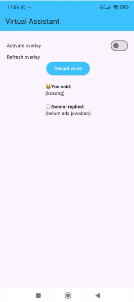
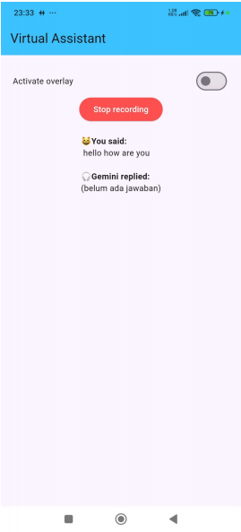
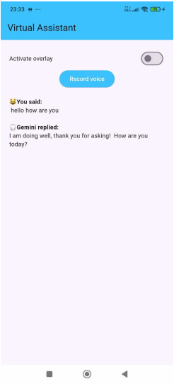

Social Media Virtual Assistant
AI Assistant • Flutter • Python • TTS/STT
Social Media Virtual Assistant is an AI-powered mobile application designed to help elderly users interact with WhatsApp and messaging platforms more easily.
The application integrates speech-to-text (STT) and text-to-speech (TTS) technologies, enabling users to communicate naturally through voice commands.
I worked on integrating the AI chatbot and voice-processing components while improving the application's accessibility and usability.
Features
- AI chatbot interaction.
- Speech-to-Text integration.
- Text-to-Speech output.
- Accessible interface for elderly users.